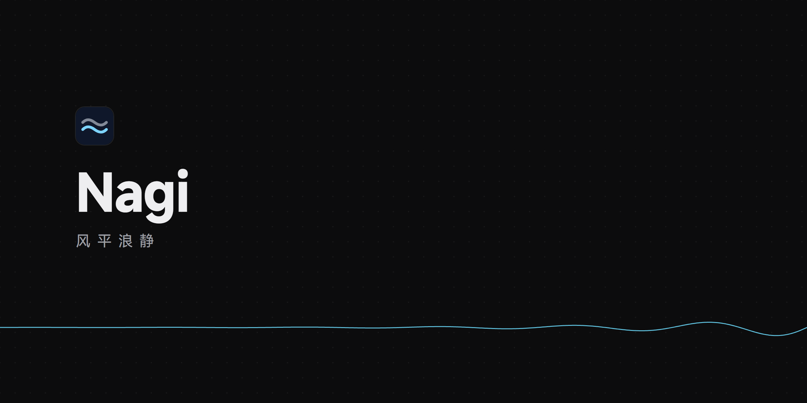
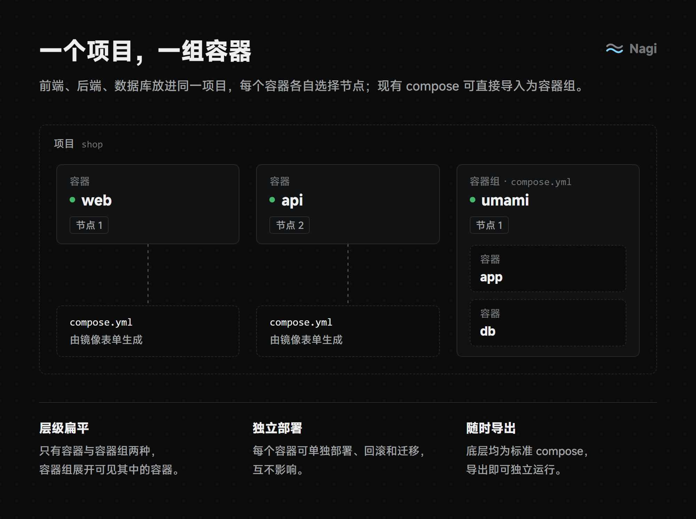
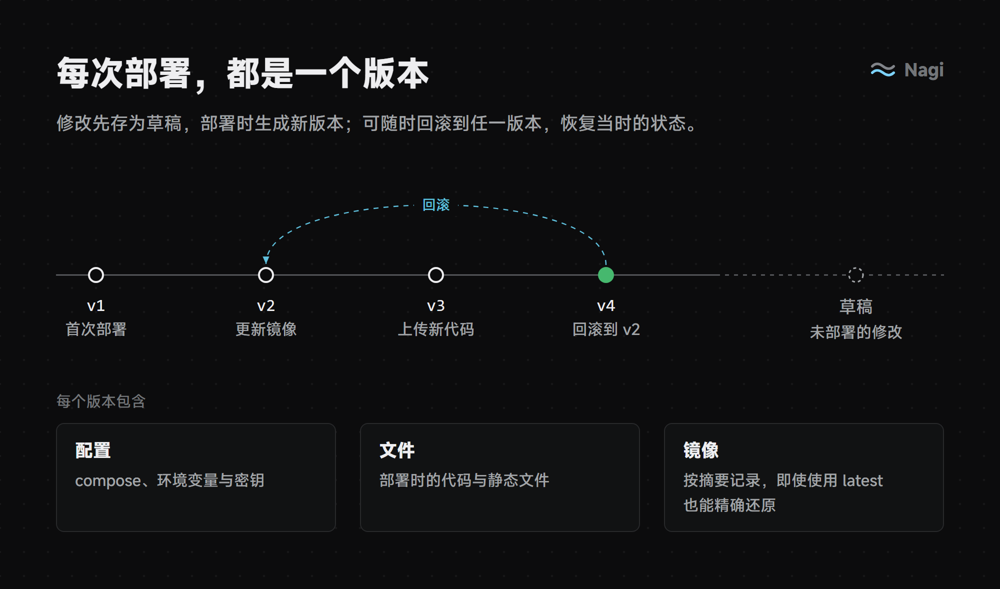
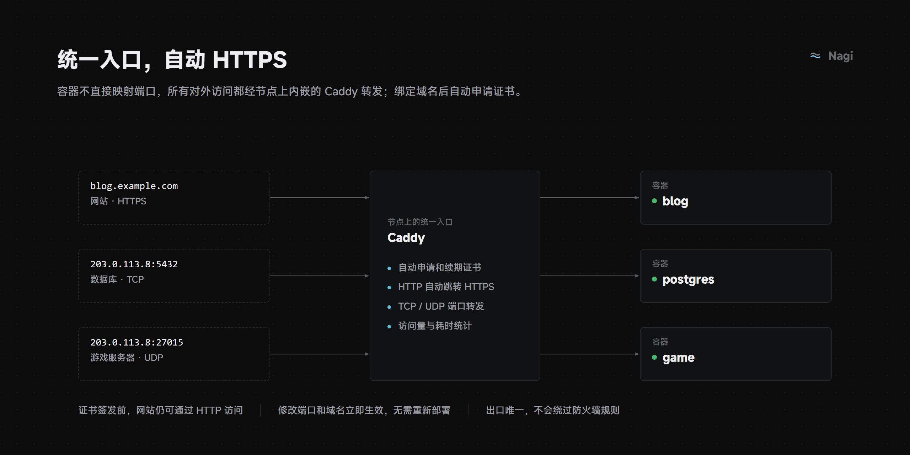
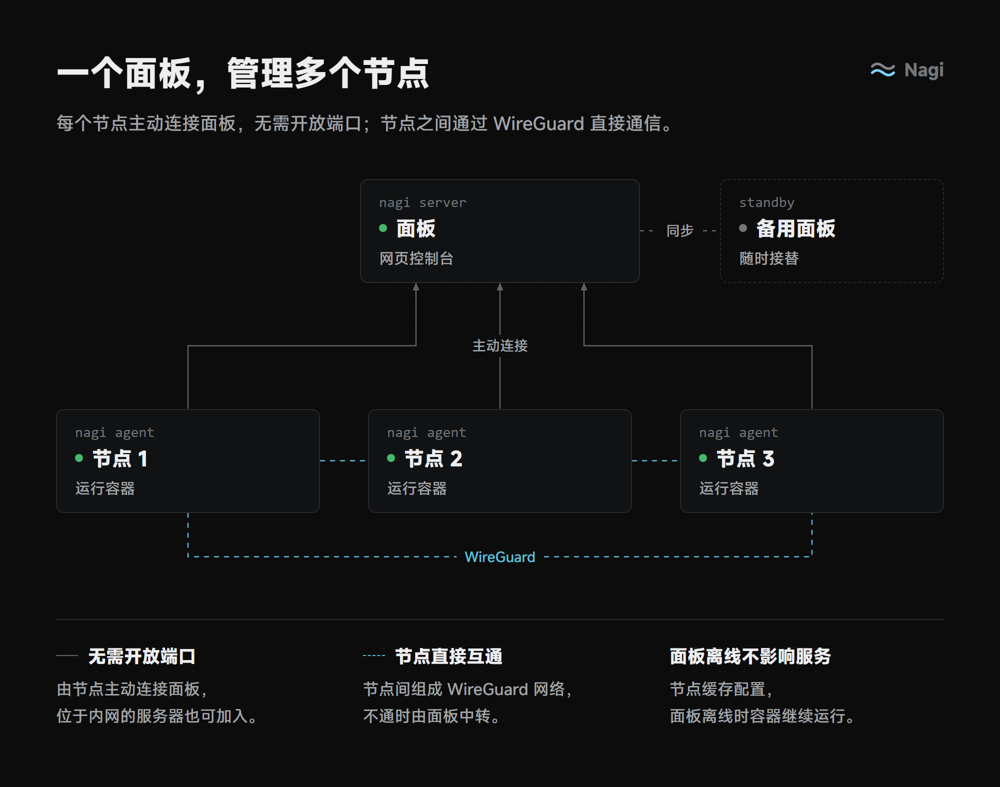
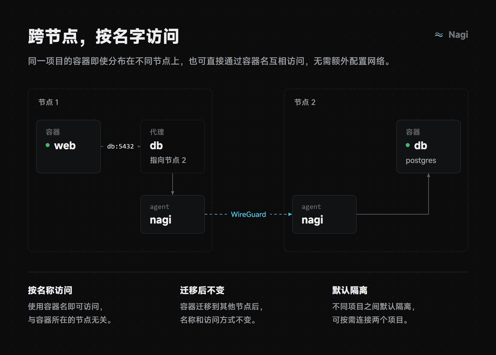
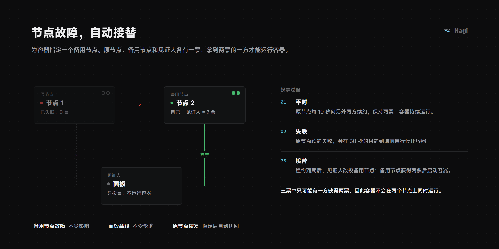
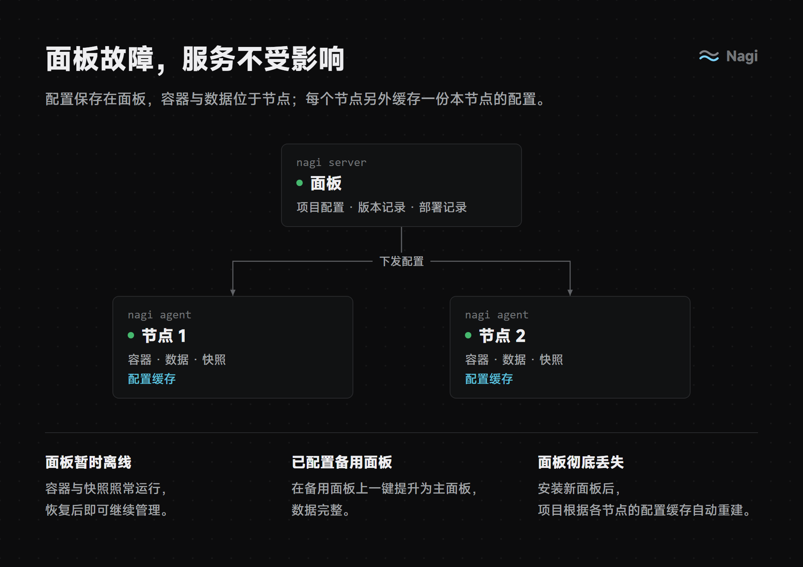
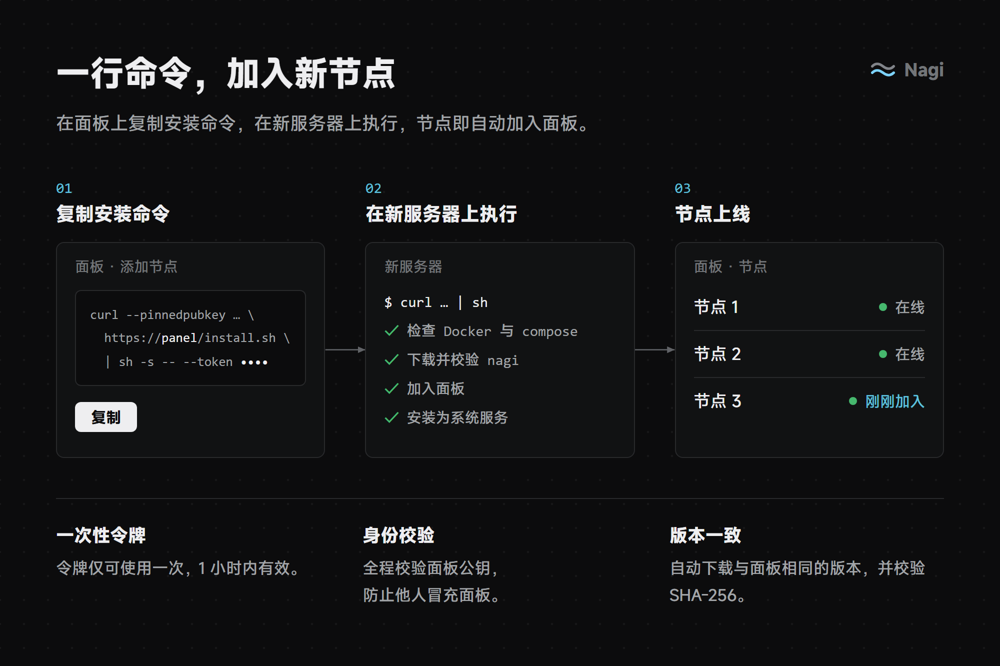

开源的 Docker 项目面板，默认即可上生产
Nagi 追求简单、美观、易于部署。用一个面板管理多台服务器上的容器：项目由一组容器组成，可以分布在不同节点上，跨节点按名字互相访问；节点或面板出故障时，服务尽量不受影响。
compose 是唯一的底层定义
镜像表单也会生成 compose，随时可以导出、脱离平台。
默认可上生产
开箱即用的默认值就是安全、可靠的，高级选项默认折叠。
零外部依赖
除 Docker 与 compose 插件外，不依赖域名、外部 CA、云服务或数据库。
项目与部署

项目保存在面板上，不属于任何一台机器。添加容器有两种方式：填写镜像表单（直接运行在线镜像，也可以附带文件），或者粘贴一份 compose 作为容器组。项目之间默认隔离，需要时可以单独连通两个项目。

每个容器独立记录版本，配置、文件、镜像摘要一起回滚，可选同时恢复数据；部署记录还能把整个项目回到某次部署时的状态。文件可以上传压缩包，也可以从 git 仓库拉取（支持 webhook）。

在界面上按服务开关对外访问：绑定域名即自动签发证书，也可以转发 TCP/UDP 端口。80 和 443 端口留给项目域名，面板自己使用单独的端口。
多节点

节点通过 mTLS 主动连接面板，单条连接经 yamux 多路复用，面板通过反向 gRPC 调用节点。面板使用自签 CA，节点以公钥指纹校验面板身份。

节点之间基于用户态 wireguard-go 组成全互联网络，直连不通时依次回退到面板的 UDP 中继和 TLS 中继。网络连通不代表有权访问，每次调用都按调用方公钥单独鉴权。
高可用

无状态容器自动接替；有状态容器先告警，由你确认后接替，原节点恢复后自动切回。也可以手动把容器迁移到另一个节点，数据不丢失。

面板离线时，容器照常运行、重启、快照和接替，告警照常发送，只是暂时不能修改和部署。可以配置备用面板实时同步，主面板故障时手动提升；面板彻底丢失时，新面板从节点缓存重建项目。
此外还支持
快照
按容器定时备份与恢复，可指定备份节点作为异地副本。
日志、终端、监控
告警支持 webhook 与 Telegram，面板离线也能发出。
环境变量与密钥
项目、容器组、容器三层变量，以及私有镜像仓库认证。
健康检查与资源限制
在界面上配置，不需要手写 compose。
镜像
每天检查更新并提醒，国内节点可配置镜像加速。
面板安全
可选两步验证、登录限速与安全入口，一键升级节点。
快速开始
01安装面板
支持 Linux（amd64 / arm64），需要 Docker 与 compose 插件，未安装时脚本会自动安装。面板内嵌一个节点，单机即可使用。
$curl -fsSL https://github.com/SIPC/Nagi/releases/latest/download/install.sh | sh
02添加节点
在面板中复制安装命令，到新服务器上执行即可。

03添加备用面板（可选）
在主面板设置页生成配对码，在新服务器上用配对码安装。
$curl -fsSL .../install.sh | sh -s -- --standby <配对码>
技术栈
后端
Go
gRPC
Connect-RPC
SQLite
wireguard-go
Caddy（含 layer4）
kopia
前端
React
TypeScript
Vite
TanStack Router / Query
shadcn/ui
交付
单个二进制 nagi
nagi server · 面板
nagi agent · 节点